Telemetry¶
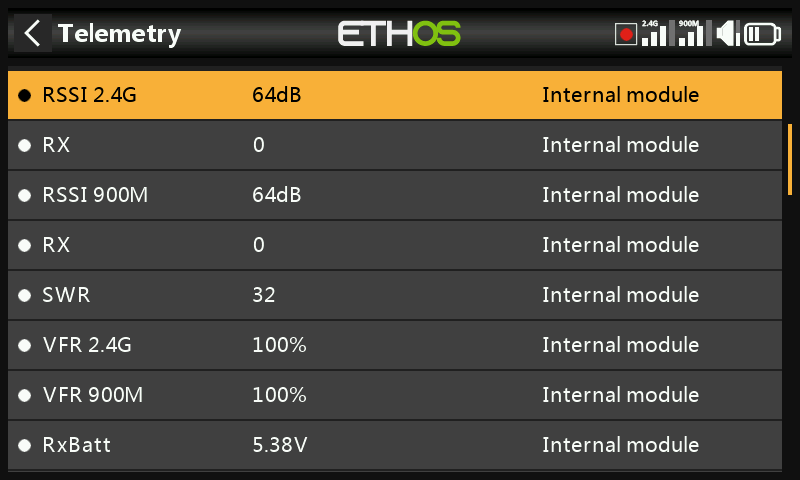
Telemetry carries information back from the model to the pilot — link quality (RSSI, VFR), voltages and currents, and anything else a connected sensor reports (GPS position, altitude, and so on). Up to 100 sensors are supported per model; discovery and configuration happens here, but telemetry is actually displayed as display screen widgets, configured separately under Configure Screens.
How FrSky telemetry works¶
FrSky's sensors are hub-less: Smart Port (S.Port) is a 3-wire bus (Gnd, V+, Signal), daisy-chained in any order into the S.Port connection on X/S-series-and-later receivers, running half-duplex at 57,600 bps (F.Port and FBUS are faster).
- Physical ID — up to 28 nodes (including the receiver) share the bus, each needing a unique Physical ID (00–1B hex). FrSky devices ship with sensible defaults (e.g. Vario = 00, FLVSS = 01, Current = 02, GPS = 03) — if you connect two of the same device, the second's Physical ID must be changed via Device Config.
- Application ID — independent of Physical ID: one sensor can report
multiple values, each its own Application ID. A Vario has one Physical
ID but two Application IDs (Altitude, Vertical Speed); an FLVSS has one
Physical ID and one Application ID (Voltage). Monitoring two 6S packs
with two FLVSS sensors means changing both IDs on the second one —
Physical ID for exclusive bus communication, Application ID so the
receiver can tell Lipo 1 and Lipo 2 apart (e.g.
0300→0301). The 4th hex digit is what's normally varied, 0–F.
!!! note Sensors sharing an Application ID but different Physical IDs is only valid with sensor conflict detection disabled — a special-purpose setup, not the default case.
Each received value is tracked as its own sensor: value, Physical/ Application ID, an editable name, unit, decimal precision, an optional SD-card logging flag, and its own running min/max. Sensors are auto-discovered every power-up once set up, but must be manually discovered the first time. Once discovered, a sensor can be spoken by voice, fed into calculated sensors, used in logical switches, Vars, or mixes, shown on a custom telemetry screen, or read directly from this setup page without building a screen at all.
FBUS (formerly F.Port2) upgrades this further, folding SBUS control and S.Port telemetry onto one line at 460,800 bps (vs. F.Port's 115,200 and S.Port's 57,600 — the three are mutually incompatible bit rates), and lets one host talk to several slave accessories on that single line, all configurable wirelessly from the radio.
Multi-receiver telemetry (ACCESS Trio)¶
With up to three receivers registered under RF System, each bound receiver can be individually configured (port pins, etc.) via RX1/ RX2/RX3. Ordinarily there's one inbound telemetry path per RF link — the Tandem/TD systems are the exception, running 2.4GHz and 900MHz as two paths on one module. The active telemetry source can change mid-flight depending on RF conditions; the RX sensor reports which receiver is currently sending telemetry in real time (and logs it).
The common setup: daisy-chain the S.Port sensor bus across all three receivers, sharing a common power supply, then register/bind each receiver and discover sensors as normal — the telemetry source switches automatically as the active RX changes, and external S.Port sensor data follows along transparently. (Internal receiver sensors — RSSI, VFR, RxBatt, ADC2, RX itself — don't link this way; they're always reported for whichever receiver is currently the source. Simultaneous telemetry from all three at once is planned but not yet available.)
Link-quality sensors¶
- RSSI (Receiver Signal Strength Indicator) — how strong the model's transmission is at the receiver. Default alarms: ACCESS/TD/ TW 35 (low) / 32 (critical), loss of control around 28; ACCST 45 / 42, loss of control around 38. "Telemetry Lost" fires when the link is gone entirely — at that point no further alarms can sound, since the radio has no telemetry left to evaluate; treat it as a cue to turn back immediately. (At under ~1m separation, the receiver can be swamped and produce spurious Lost/Recovered alarm loops — not a real fault.) RSSI approximates effective range well, but VFR is the more reliable link-quality indicator.
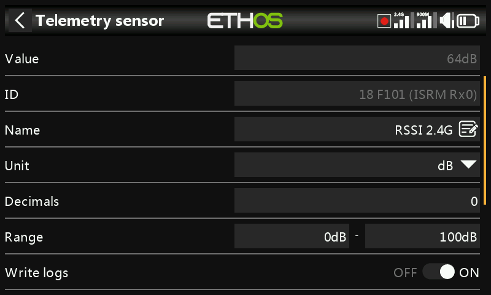
TD receivers report a per-band RSSI (2.4G, 900M); TW receivers report one per band too (2.4FSK, 2.4LoRa, 900M) — enable Individual RSSI alert per band to get separate voice alerts for each rather than one combined alert:
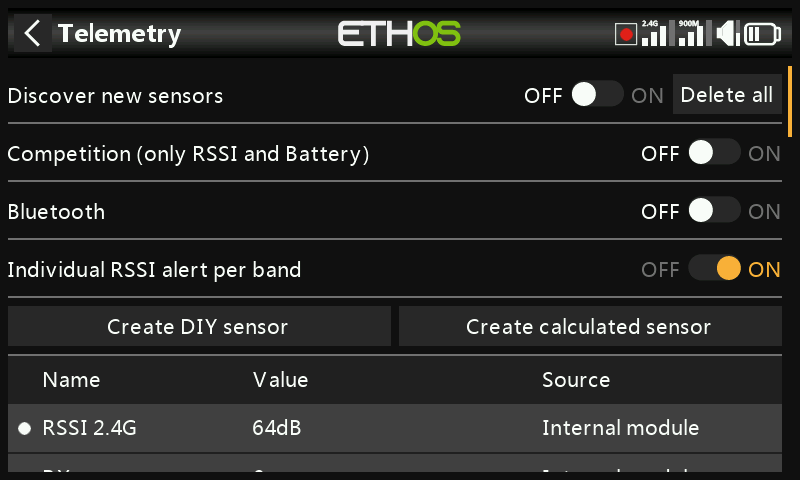
- VFR (Valid Frame Rate) — valid packets per 100 received; the post-ACCESS-2.1 replacement for folding lost-frame-rate into RSSI. Default Low value warning is 50%.
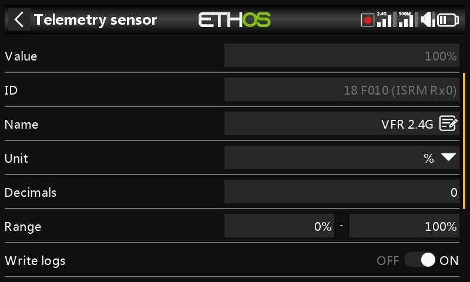
TD/TW receivers report two VFR streams (one per band); Rx VFR (on TD/TW/AP/AP Plus receivers) instead counts every good frame regardless of which band it arrived on — the one to watch if only tracking a single VFR value.
- RxBatt — receiver battery voltage.
- ADC2 — a second analog voltage input, on receivers that support it.
- SWR — antenna SWR, when using an external antenna.
- Attitude/motion sensors, where supported: R.Angle, P.Angle, AccX/Y/Z.
Every numeric sensor also gets automatic <name>-/<name>+ min/max
sensors, even though they're not shown in the main sensor list.
Discovering sensors¶
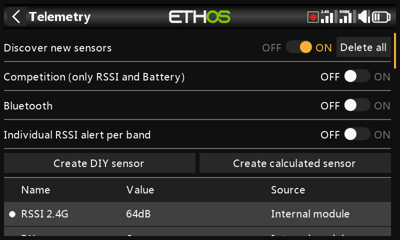
With everything bound and powered up, enable Discover new sensors — a flashing dot (or a red value, if no data yet) marks each sensor as it's found, and the screen populates automatically. This has to be repeated per model, and again whenever a new sensor is added.
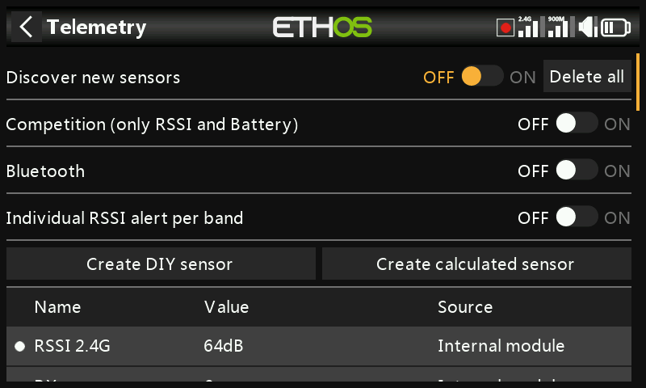
- Switch discovery back Off once done.
- Delete all clears every sensor to start over.
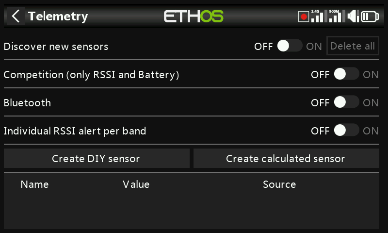
- Competition mode strips telemetry down to just RSSI and RxBatt — for contests that allow only link-status sensors. Turning it off again requires a power cycle before sensors can be rediscovered.
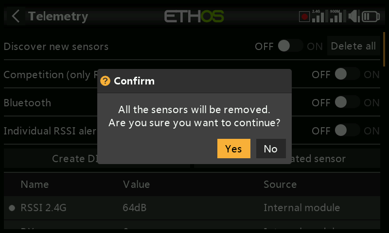
- Bluetooth telemetry mode pairs with the FrSky FreeLink phone app, which can display telemetry live and also configure FrSky devices like stabilized receivers.
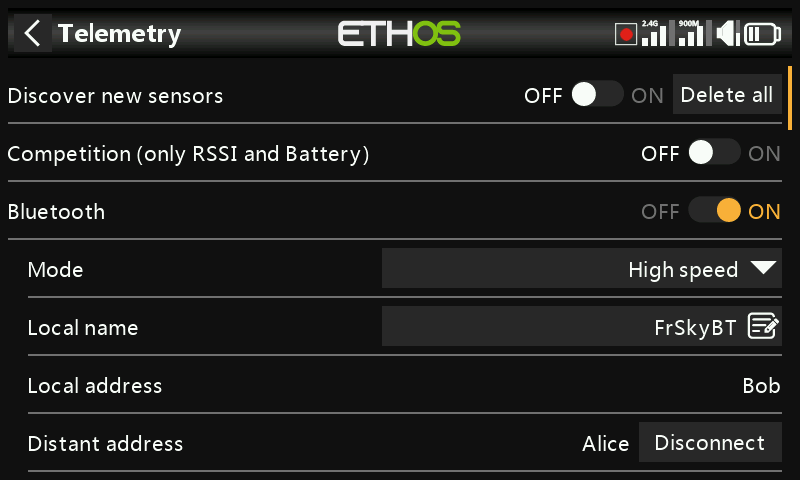
Editing a sensor¶
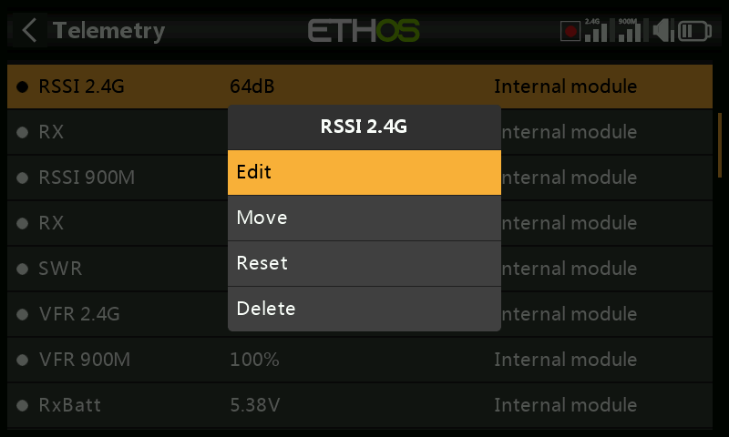
Tap a sensor for Edit, Move, Reset, or Delete. Common fields: Value (read-only), ID (Physical + Application ID, and sending receiver), Name, Unit, Decimals, Range (fixed scaling limits — mainly relevant when the sensor is used as a channel source), Write logs, Reset (a source that resets this sensor), and Sensor lost warning delay (disable entirely, or 1–30s, default 10s, to filter brief dropouts — understand the risk of setting this too high; the "sensor lost" message only plays once even if many sensors drop at once; disabled by default for receiver-internal sensors, since those rarely go missing).
Some sensors add their own fields:
- ADC2 — Ratio and Offset, to correct scaling.
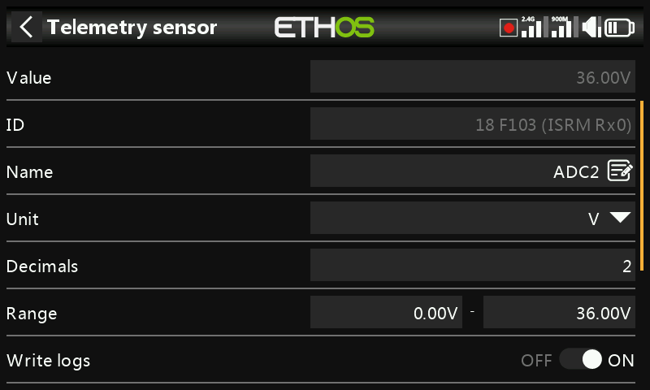
- RSSI — Critical value and Low value warning thresholds.
- VFR — Low value warning (default 50%).
- VSpeed (vario vertical speed) — Range up to ±100m/s (default ±10m/s). Vario audio behavior itself now lives under the Play Vario special function, not here.
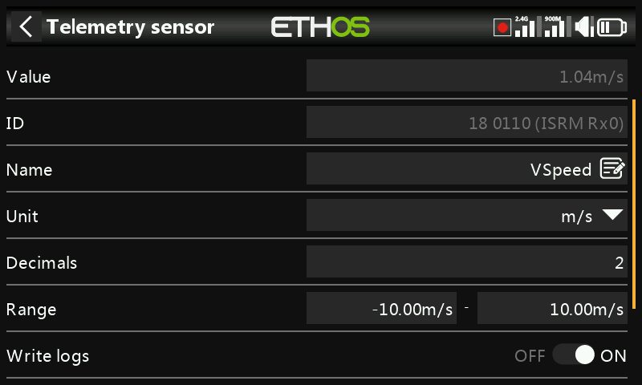
DIY / third-party sensors¶
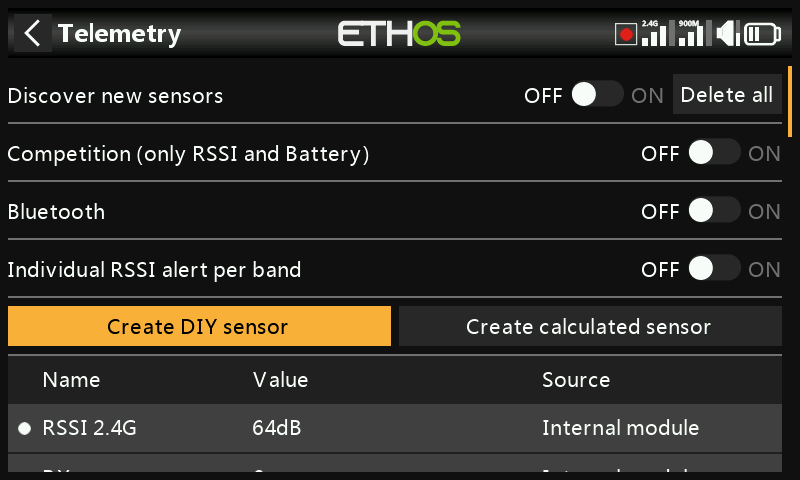
Create DIY Sensor adds a non-FrSky sensor manually: Auto detect (populates Physical ID, Application ID, and Module automatically, if possible), or set them by hand, plus Protocol decimals/unit (incoming precision, 0–3 decimals, and its native unit) and Display decimals/ unit (independent of the protocol's own) alongside the same Range/ Ratio/Offset/Write logs/Reset/Sensor lost warning delay fields as any other sensor.
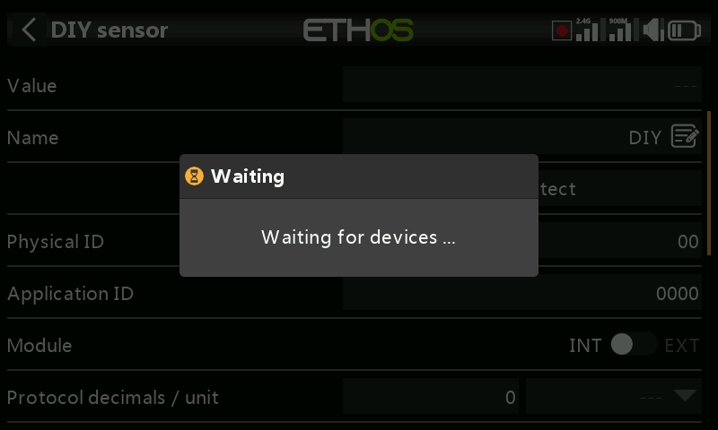
Calculated sensors¶
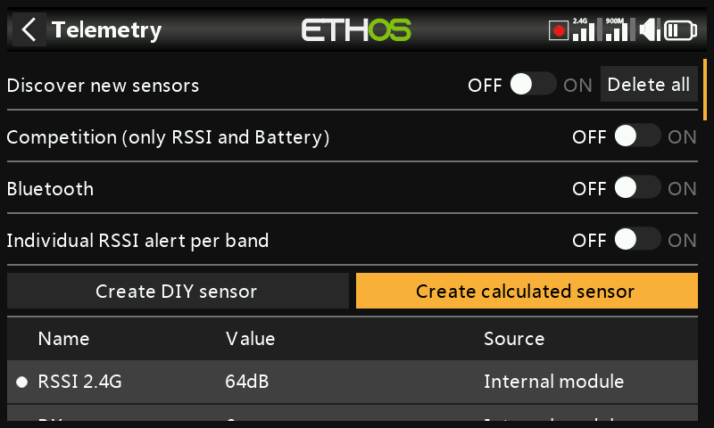
Derive a new sensor from one or more existing ones:
- Consumption — energy used, integrated from a current sensor (e.g. FAS series). Unit mAh/Ah, range up to 1000Ah.
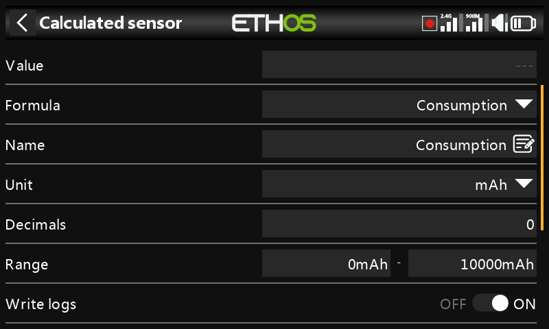
- Distance — from a GPS source (plus an altitude source, for 3D distance). Units cm/m/km/ft, up to 20km.
- Trip — accumulated distance between successive GPS fixes. Same units, up to 1000km.
- Multi Lipo — cascades two or more Lipo voltage sensors to monitor packs bigger than 6S (up to 67.2V/8S). Select each cell sensor low-to-high; every additional Lipo sensor needs its Physical and Application IDs changed in Device Config first (the Lipo Voltage setup tool there helps), discovered one at a time, and renamed so they're distinguishable.
- Percent — rescales a sensor to 0–100%, with an Invert option (e.g. to show remaining percentage instead of consumed).
- Power — Wattage from a Current and Voltage source pair, up to 1,000,000W.
- Custom — an arbitrary formula chained from one or more sources.
Every calculated sensor also has Persistent (survives power-off/model change, reloaded next use) and a Reset button right on the edit screen.
Custom sensors¶
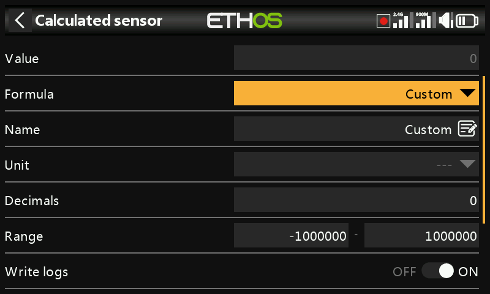
Starts from one source, then Add chains further operations: Add(+), Minus(-), Multiply(×), Divide(/), Min, Max, Sqrt. Units are selectable from a long list covering voltage, current, capacity, power, distance, speed, time, temperature, percentage, angles, pressure, and more; range −1,000,000 to 1,000,000, 0–4 decimals.
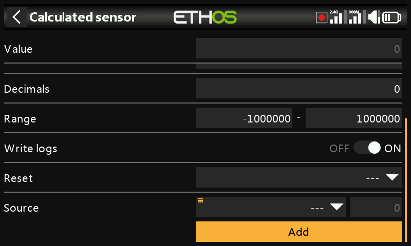
Peak power
Multiply a voltage sensor (VFAS) by a current sensor (Current),
then add a Max step referencing the sensor's own current value
(MaxPower) to track the highest reading seen — 288W in this
example run:
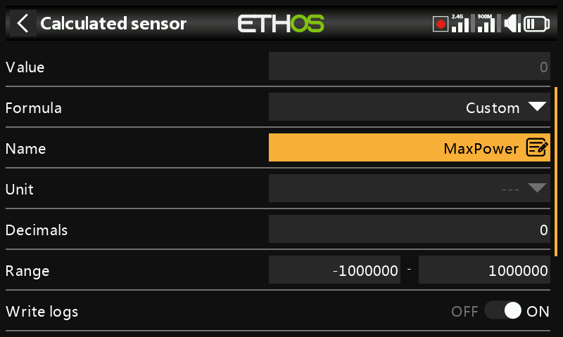
Arithmetic against a constant
Source set to RSSI 2.4G (reading 64dB), then a Subtract action
whose own source is long-pressed and Convert to value applied,
turning it into an editable constant (20) rather than a live source —
the result is a steady 44dB (64 − 20):
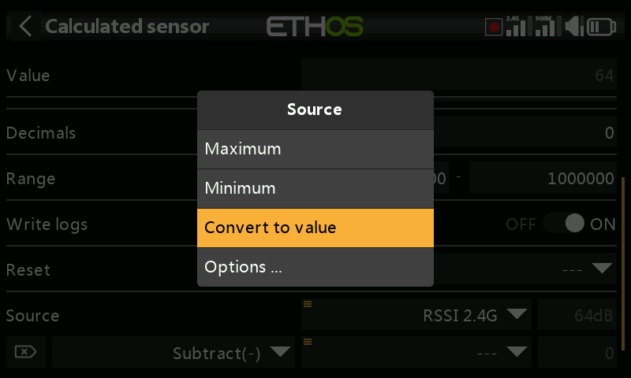
A source's internal value
Every source has an internal integer range of ±1024 corresponding to its ±100% displayed range — visible directly by pointing a Custom sensor at, say, Throttle: full throttle reads +1024 internally, full reverse reads −1024.
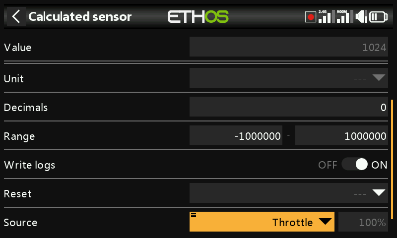